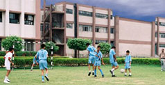
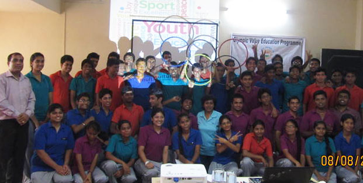

ACADEMICS AND GROWTH


Kindergarten – LKG & UKG
We lay emphasis on the total development of the child’s personality through interactive methods
of creativity, joyful and congenial atmosphere and surroundings.
Class I to II
English, Hindi, Mathematics, Environmental Studies, Art, Craft,Computer Education,Physical Education,
Aerobics, Dance and Music.
Class III to V
English, Hindi, Mathematics, Social Studies, General Science, Computer Science, General Knowledge,
Value Education, Art, Music, Craft, Aerobics.
Class VI to X
English, Hindi, Mathematics, General Science, Information Technology, History, Civics, Geography,
Sanskrit, Art, Craft, General Knowledge, Projects, Music, Physical Education, Creative Writing and
Value Education.
Class X to XI
The school offers Science and Commerce Streams in senior secondary level.